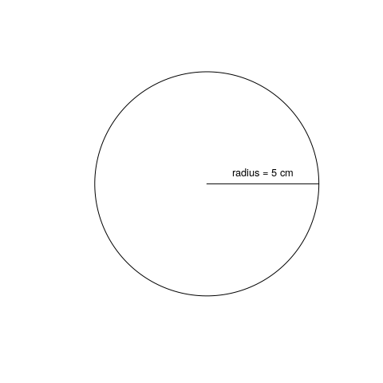

1+1## [1] 2 10-1## [1] 9 2*2
8/2 2^3## [1] 8Use R to calculate the following skill testing question:
\[ 2+16*24-56 \]
Hints: The * symbol is used to multiply
\[ 2+16*24-56 \]
2+16*24-56## [1] 330Use R to calculate the following skill testing question:
\[ 2+16*24-56 / (2+1)-457 \]
Hints: Think about the order of the operation.
\[ 2+16*24-56 / (2+1)-457 \]
2+16*24-56/(2+1)-457## [1] -89.66667Note that R follows the order of the operations
Use the “Up” and “Down” arrow keys to reproduce previous commands.
Give it a try!

What is the area of this circle, with a radius of \(5\ cm\)?
What is the area of a circle, with a radius of \(5\ cm\)?
3.1416*5^2## [1] 78.54Tip: Note that R has some built-in constant such as \(\pi\), so you can write:
pi*5^2## [1] 78.53982R!<- object name <- assigned valueThe value on the right is assigned to the name on the left with the assignement operator <-
It is also possible to use the = sign, but it is better to avoid it as it is also used for other purposes.
| Type | Symbol |
|---|---|
| Letters | a-z A-Z |
| Numbers | 0-9 |
| Period | . |
| Underscore | _ |
R is case sensitive, the names Data1 and data1 are not the same.